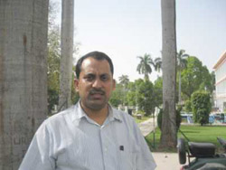

|
MOHAMMAD SAJJAD is Assistant Professor at the Centre for the Advanced Study of History, Aligarh Muslim University, where he earned his Ph.D. in 2004. He also previously taught history at the Jamia Millia Islamia University, New Delhi. His most recent research project looked at Muslim political identities in Bihar, 1947-2007. |
|  |